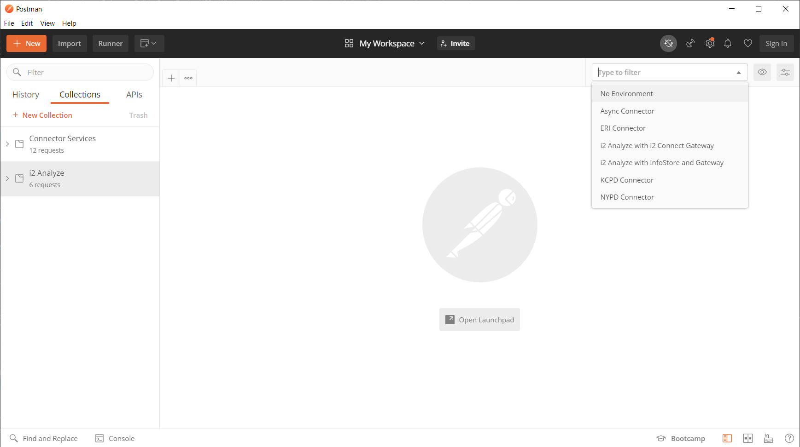
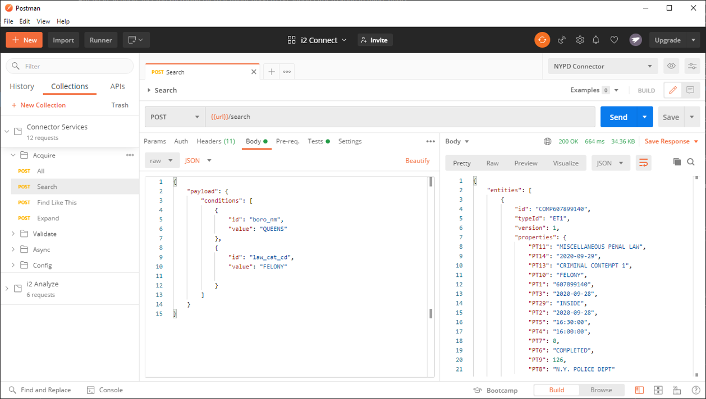
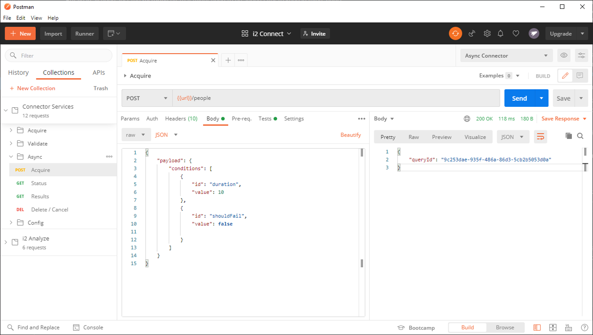

Postman
You can use Postman collections to test the endpoints of i2 Analyze and your connector.
Prerequisites
- Install the latest version of Postman
- Import the Postman environments from the
postman/environmentsdirectory in this repository - Import the Postman collections from the
postman/collectionsdirectory in this repository
To import the environments and collections:
- Click Import, or click File -> Import
- In the Import Folder tab, click Choose Folders
- Select the
postmandirectory that you downloaded from this repository
The Postman collections are displayed in the left pane and a populated dropdown list of environments near the top right of the window.

Testing i2 Analyze
To make sure that i2 Analyze is configured correctly, authenticate a user and test the API.
Authentication
- Click on the environment dropdown menu at the top-right bar:
- If you have deployed i2 Analyze with the i2 Connect gateway, select the
i2 Analyze with i2 Connect Gatewayenvironment. - If you have deployed i2 Analyze with the Information Store and the i2 Connect gateway, select the
i2 Analyze with InfoStore and Gatewayenvironment.
- If you have deployed i2 Analyze with the i2 Connect gateway, select the
- Open the
i2 Analyzecollection. - Open the
Authenticationfolder. - Run the
Form Based Loginrequest.
This authenticates your Jenny user, and generates the session token to permit subsequent API requests.
API
After generating the token, test that you can use the i2 Analyze endpoints.
Get all valid time zones
- In the
i2 Analyzecollection, open theCorefolder. - Run the
Timezonesrequest.
You should see that i2 Analyze returns all valid time zones.
For more information about the GET /api/v1/core/temporal/timezones endpoint, refer to the REST API documentation.
Reload connectors configuration
- In the
i2 Analyzecollection, open theGatewayfolder. - Run the
Reloadrequest.
You should see that i2 Analyze returns its connectors configuration.
For more information about the POST /api/v1/gateway/reload endpoint, refer to the REST API documentation.
Reload live configuration
- Ensure you are authenticated as the
Administratoruser (Jenny). - In the
i2 Analyzecollection, open theAdminfolder. - Run the
Reloadrequest.
A 200 OK response indicates that the live configuration was loaded successfully.
For more information about the POST /api/v1/admin/config/reload endpoint, refer to the REST API documentation.
Testing a connector
Before you test your connector, ensure that both i2 Analyze and your connector are running. In this example, the NYPD connector is tested. For more information, see Setting up and running the NYPD connector.
- From the environment dropdown menu, select the
NYPD Connectorenvironment. - Open the
Connector Servicescollection.
Config and schema requests
- In the
Connector Servicescollection, open theConfigfolder. - Run the
Configrequest.
The response provided should be the full contents of the connector's config.json.
The Schema and Charting Schemes requests should echo the contents of your connector schema and charting schemes XML files respectively.
Acquire requests
The Acquire folder contains requests that respond with entities and links according to how their respective endpoints were implemented.
Using the NYPD connector example:
All
The All request synchronously returns all entities and links from the NYPD dataset as a JSON response.
Search
The Search request is a parameterized search accepts a JSON payload of specified conditions which filter the results returned.

The values of each condition can be changed to imitate user input from the client for a condition field.
Find Like This
The Find Like This request is a seeded search that accepts a JSON payload of a single seed entity with a property that is used to filter the JSON response by matching against entities with a similar property.
Expand
The Expand request is a seeded search that accepts a JSON payload of a single seed entity used as a starting point to find other entities connected to it and the links that connect them. These entities and links are returned in the response in JSON format.
Validate requests
The Validate folder contains a single Search request that performs server-side validation on the payload of specified conditions to ensure input values are in the correct format.
Async requests
The Async folder contains requests for the asynchronous service. These requests only function as expected on the Async connector. For more information, see setting up and running the Async connector
Acquire
The Acquire request triggers an asynchronous query and returns a queryId. Using Postman tests (post-request logic), this queryId is automatically stored as an environment variable (queryId) to facilitate subsequent async requests.

The request accepts a payload of parameters for simulating the asynchronous request; configuring the duration of time before succeeding and optionally mocking a failure.
Status
Using the queryId retrieved from the previous request, the Status retrieves the current status and additional information of the triggered asynchronous query as a JSON response.

Results
Using the same queryId from the async acquire, the Results retrieves the JSON response of entities and links from the asynchronous query as you would expect from a synchronous request.
This request only works as expected after the status of the query is SUCCEEDED.
Delete / Cancel
Using the queryId, the Delete / Cancel request deletes an asynchronous query if its state is SUCCEEDED or FAILED. It cancels the running job if it was STARTED, causing it to be FAILED.
Auth requests
The Auth folder contains requests for the services which require authentication. These requests only function as expected on the Auth connector. For more information, see setting up and running the Auth connector
Login
There are two Login requests for the two example authentication configurations specified in the connector configuration of the Auth connector. One logs in using sample username and password credentials; the other logs in using a sample API key.
The post-request logic stores the authToken which the connector responds with on a successful log-in. This authToken is used for subsequent requests.
Acquire & Acquire Async
These requests are just like the synchronous acquire and asynchronous acquire requests except that they include the generated authToken from the login requests in the Authorization header of their requests.